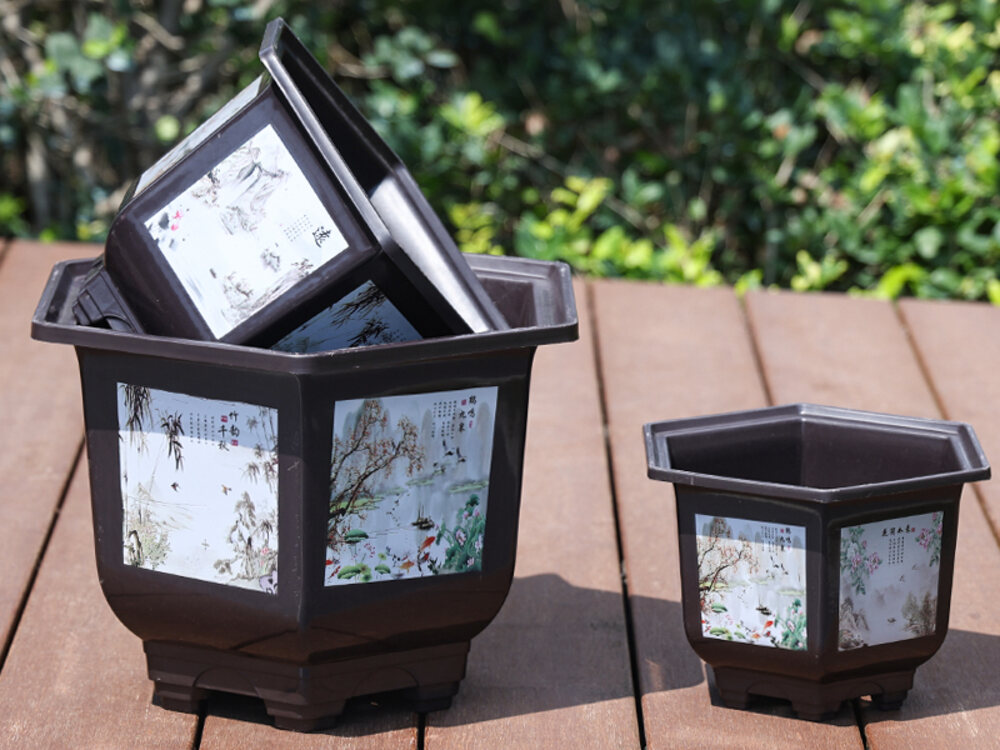
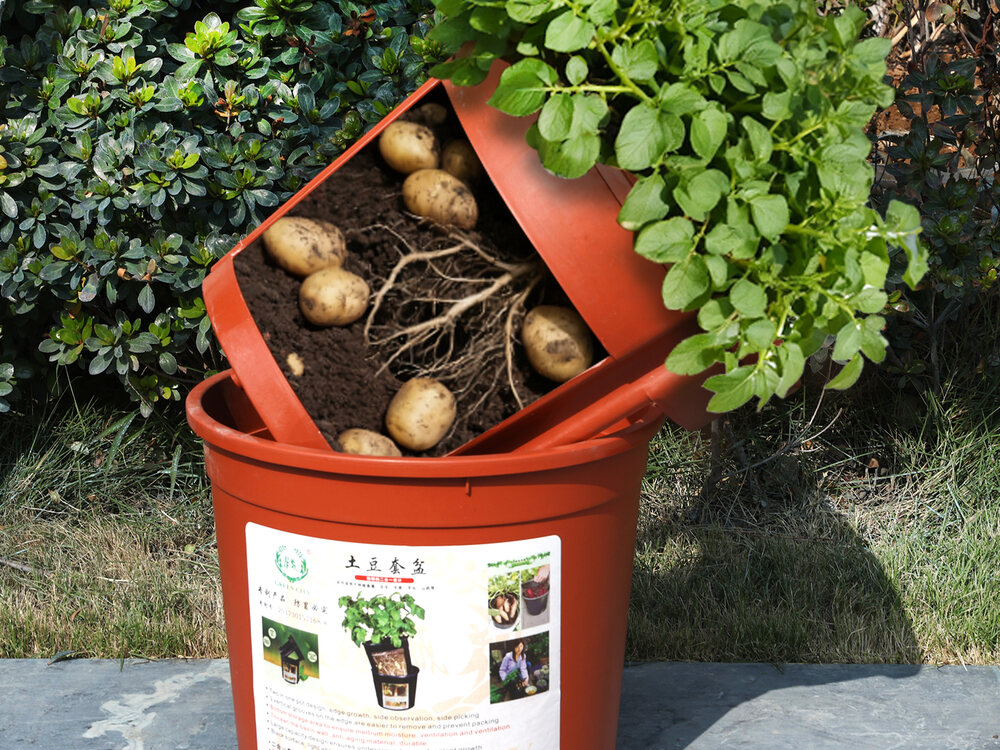
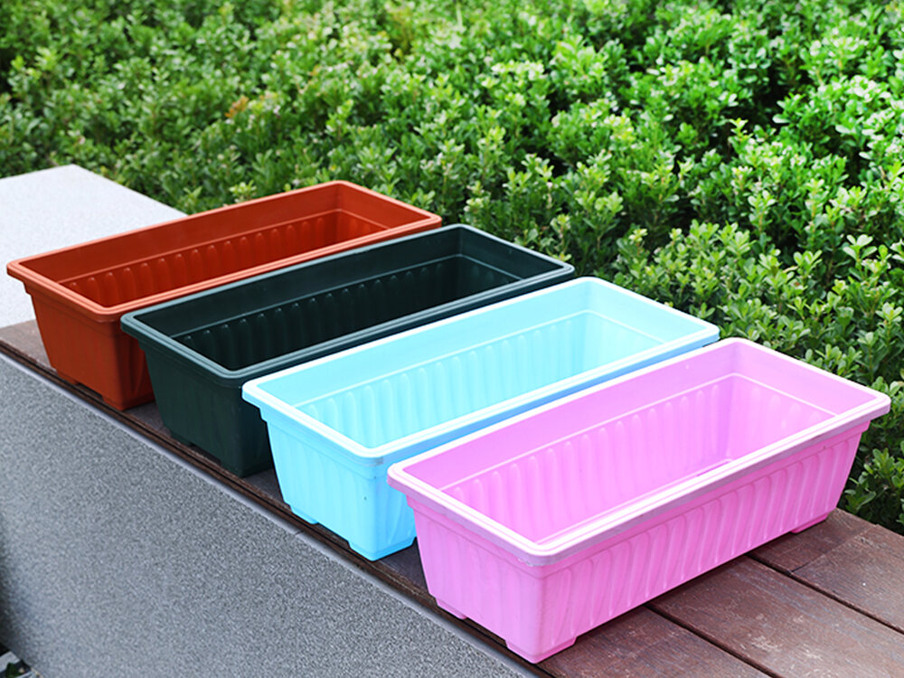

01 / FLOWER PLANTER
植木鉢シリーズ
室内外の空間になじむ端正なフォルム。複数のサイズとカラーを展開し、家庭園芸から店舗・施設の装飾まで幅広く対応します。
用途草花・観葉植物・空間装飾
取引卸売・小売向け・OEM相談
PLASTIC PRODUCTS
暮らしと園芸に、使いやすさと新しい価値を。
PRODUCT LINEUP
実物資料をもとに、用途と特徴が伝わるよう製品別にご紹介します。
室内外の空間になじむ端正なフォルム。複数のサイズとカラーを展開し、家庭園芸から店舗・施設の装飾まで幅広く対応します。

内鉢を持ち上げて生育や収穫を確認できる二重構造。家庭でジャガイモなどの根菜栽培を手軽に楽しめる、機能性の高い製品です。

葉物野菜やハーブなどの家庭栽培に適したワイドタイプ。ベランダや庭で使いやすく、十分な栽培スペースと扱いやすさを両立します。



PROCUREMENT & OEM
販売市場と顧客層に合わせてシリーズ、サイズ、カラーを選定します。
卸売、店舗、ECなどの販売形態に応じて包装と発注条件を確認します。
数量と条件に応じてカラー、表示、包装などの個別相談に対応します。
PRODUCT INQUIRY